class: center, middle # David Marquez-Gamez ROBOTICS AND AUTONOMOUS SYSTEMS<br> Engineer, PhD Researcher in Robotics and Artificial Intelligence <damarquezg@gmail.com> --- # About me - Background 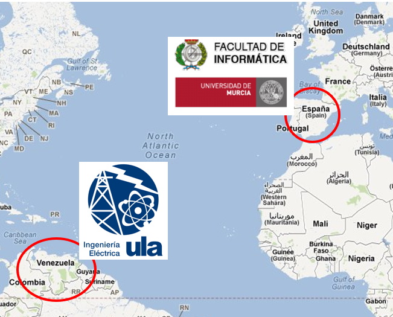 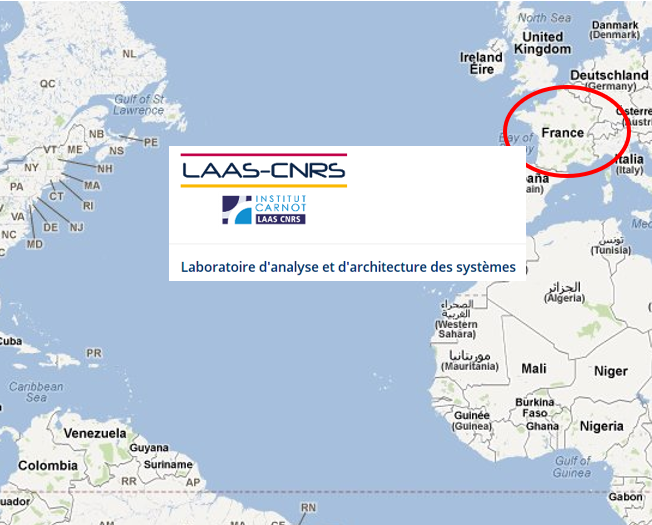 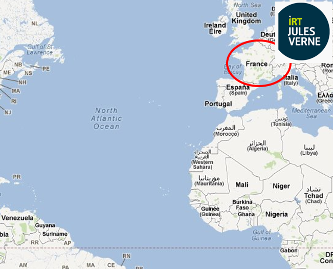 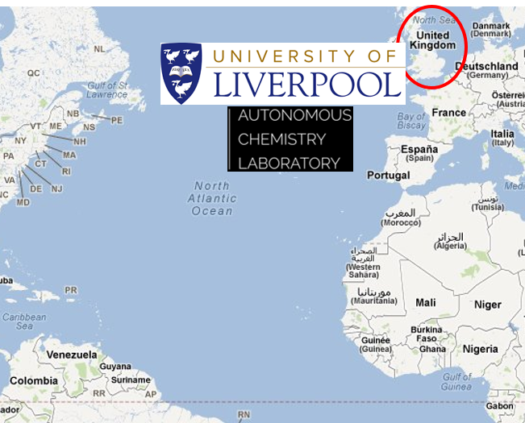 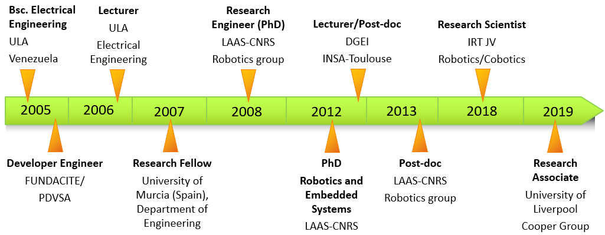 --- # Hands-on experience: Technical Skills <img src="skills1.png" style="width: 100%" /> --- # Hands-on experience: Technical Skills Projects<br><br> 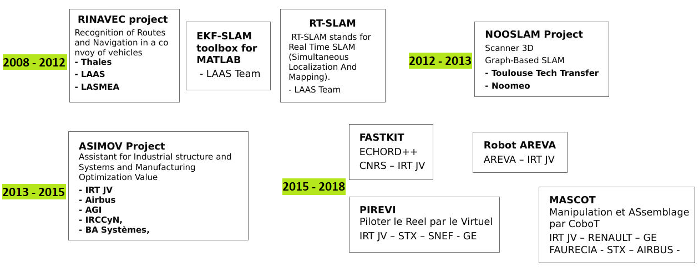 --- # Hands-on experience: Technical Skills RINAVEC Project: RT-SLAM /SLAM with MOT <center><div class="video"> <iframe width="370" height="200" src="https://www.youtube.com/embed/sFe2w_vkaoc" frameborder="0" allow="autoplay; encrypted-media" allowfullscreen></iframe> <iframe width="370" height="200" src="https://www.youtube.com/embed/ilHJ_m_TaRs" frameborder="0" allow="autoplay; encrypted-media" allowfullscreen></iframe> </div></center> <br> NOOSLAM Project <center><div class="video"> <iframe width="400" height="220" src="https://www.youtube.com/embed/SDPQVD2hNQo" frameborder="0" allow="accelerometer; autoplay; encrypted-media; gyroscope; picture-in-picture" allowfullscreen></iframe> </div></center> --- # Hands-on experience: Technical Skills ASIMOV Project: Sensor Pack Patent - WO2017025521A1, Feb 16, 2017<br> <https://patents.google.com/patent/WO2017025521A1> <div class="video"> <iframe width="400" height="210" src="https://www.youtube.com/embed/pSAwKnw0rVY" frameborder="0" allow="autoplay; encrypted-media" allowfullscreen></iframe> 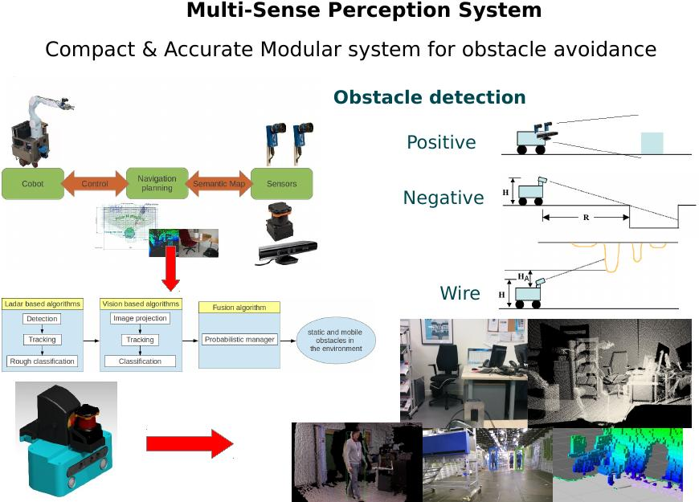 <center><div class="video"> <iframe width="400" height="210" src="https://www.youtube.com/embed/cCqUmbbMaqk" frameborder="0" allow="autoplay; encrypted-media" allowfullscreen></iframe> </div></center> --- # Hands-on experience: Technical Skills FASTKIT Project: Mobile Cable Robot Patent - US20180178397A1, June 2018<br> <https://patents.google.com/patent/US20180178397A1/> <div class="video"> <iframe width="290" height="195" src="https://www.youtube.com/embed/TJSsfjNlvZ4" frameborder="0" allow="autoplay; encrypted-media" allowfullscreen></iframe> 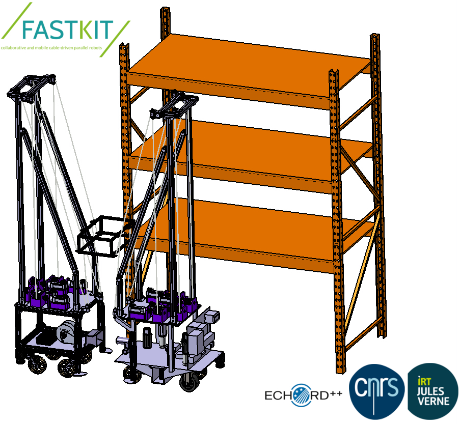 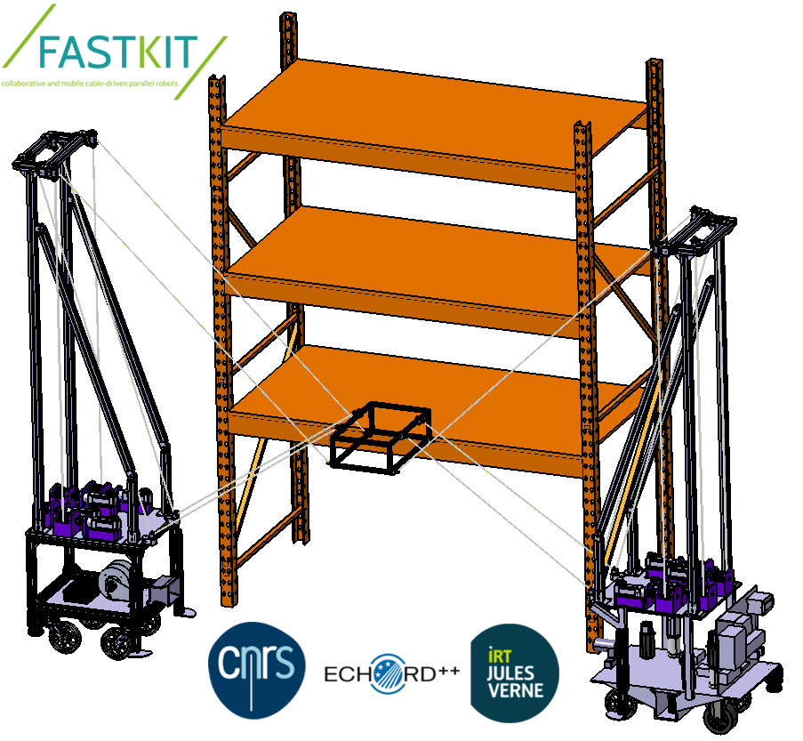 </div> AREVA Project <center><div class="video"> <iframe width="400" height="195" src="https://www.youtube.com/embed/n_uiRjll18M" frameborder="0" allow="autoplay; encrypted-media" allowfullscreen></iframe> </div></center> --- # Hands-on experience: Technical Skills PIREVI Project <center><div class="video"> <iframe width="370" height="190" src="https://www.youtube.com/embed/enz8PDUbA5M" frameborder="0" allow="autoplay; encrypted-media" allowfullscreen></iframe> <iframe width="370" height="190" src="https://www.youtube.com/embed/KRNij4uVFbs" frameborder="0" allow="autoplay; encrypted-media" allowfullscreen></iframe> </div></center> MASCOT Project <div class="video"> <iframe width="370" height="200" src="https://www.youtube.com/embed/BkGIX-GZF8E" frameborder="0" allow="autoplay; encrypted-media" allowfullscreen></iframe> <iframe width="370" height="200" src="https://www.youtube.com/embed/0UmovLQee1s" frameborder="0" allow="autoplay; encrypted-media" allowfullscreen></iframe> </div> --- # Hands-on experience: Technical Skills Mobile manipulator<br> 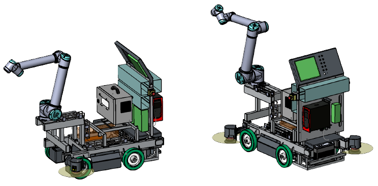 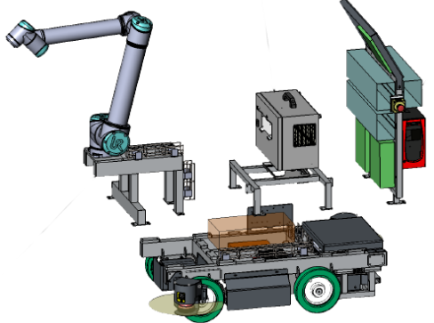 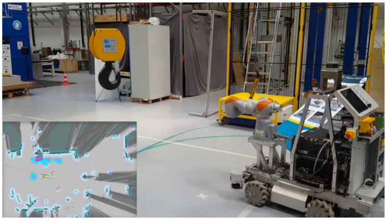 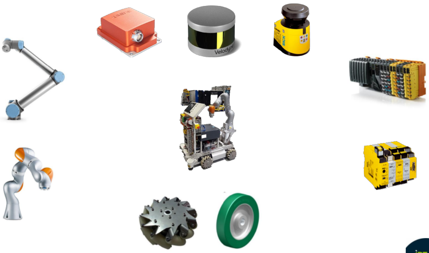 --- # Hands-on experience: Technical Skills Autonomous navigation and screwing <center><div class="video"> <iframe width="400" height="220" src="https://www.youtube.com/embed/rzult-DusFc" frameborder="0" allow="autoplay; encrypted-media" allowfullscreen></iframe> </div></center> Human-Robot Coexistence <center><div class="video"> <iframe width="400" height="220" src="https://www.youtube.com/embed/igybpQry0Uk" frameborder="0" allow="autoplay; encrypted-media" allowfullscreen></iframe> </div></center> --- # Hands-on experience: Management Skills 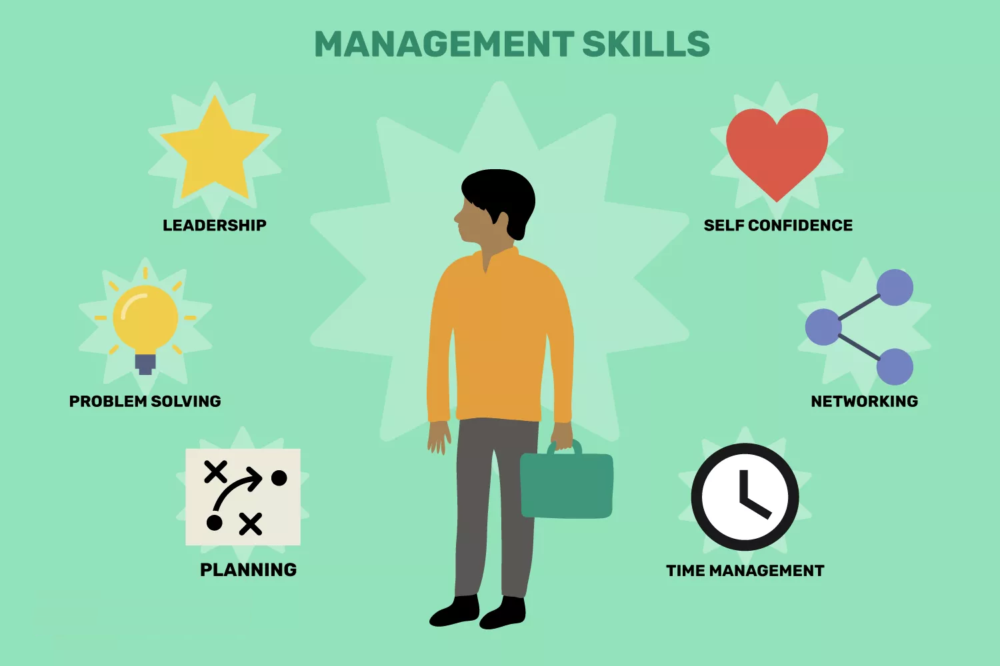 --- # Hands-on experience: Management Skills Agile & Lean Project Management<br> <center><div class="image"> 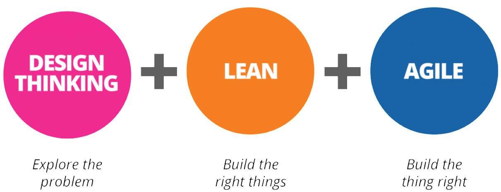 </div></center> . <center><div class="image"> 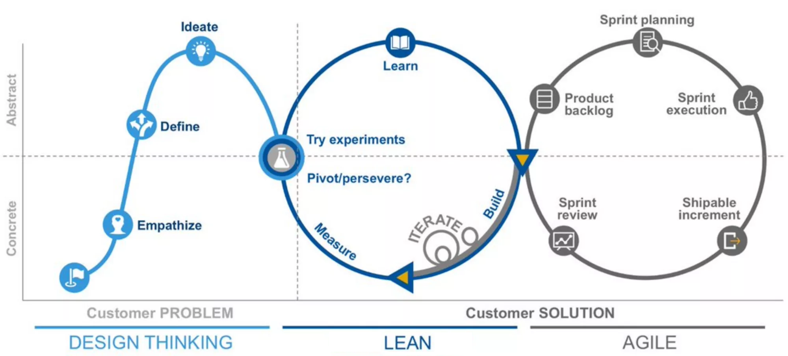 </div></center> --- # Hands-on experience: Management Skills PhD supervision: with Prof. Stéphane CARO (LS2N - Centrale Nantes)<br> * Ph.D. thesis of Tahir RASHEED: "Design, modeling and control of collaborative mobile cable-driven parallel robots" <br> Theme Leader: Robotics and Perception group at IRT JV * Etienne Hocquard: Robotics Research Engineer at Createc (Oxford, UK) * Ernest SKRZYPCZYK: Software Developper at ESA (Belgium) * Bruno Celaries: Robotics Engineer at EasyMile (Toulouse, FR) * Davide Labolani * Tomaso Manca * Michele Olivieri <div class="image"> 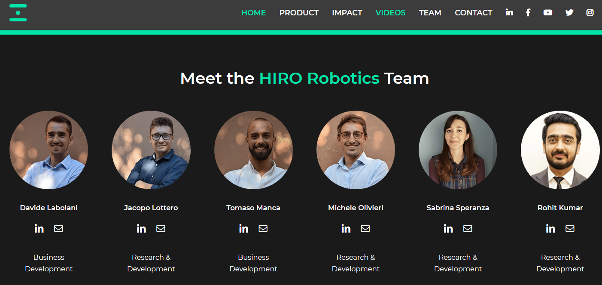 </div> Founders of HIRO robotics: <https://www.hirorobotics.com><br> (Exploiting the patent "Sensor Pack" from the ASIMOV Project, IRT JV) --- class: center, middle # Thank you <img src="robot_.png" style="width: 30%" /> --- # Appendix Sensor based control <center><div class="video"> <iframe width="560" height="315" src="https://www.youtube.com/embed/3xNm127_Jos" frameborder="0" allow="accelerometer; autoplay; encrypted-media; gyroscope; picture-in-picture" allowfullscreen></iframe> </div></center> --- # Appendix Collaborative Visual SLAM 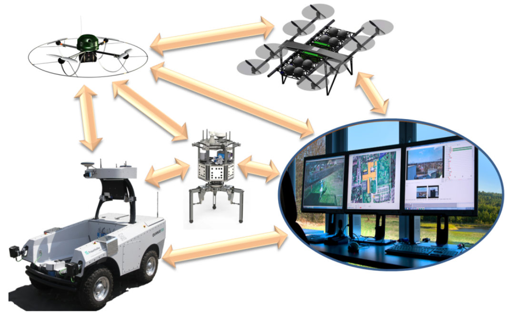 <<<>>> 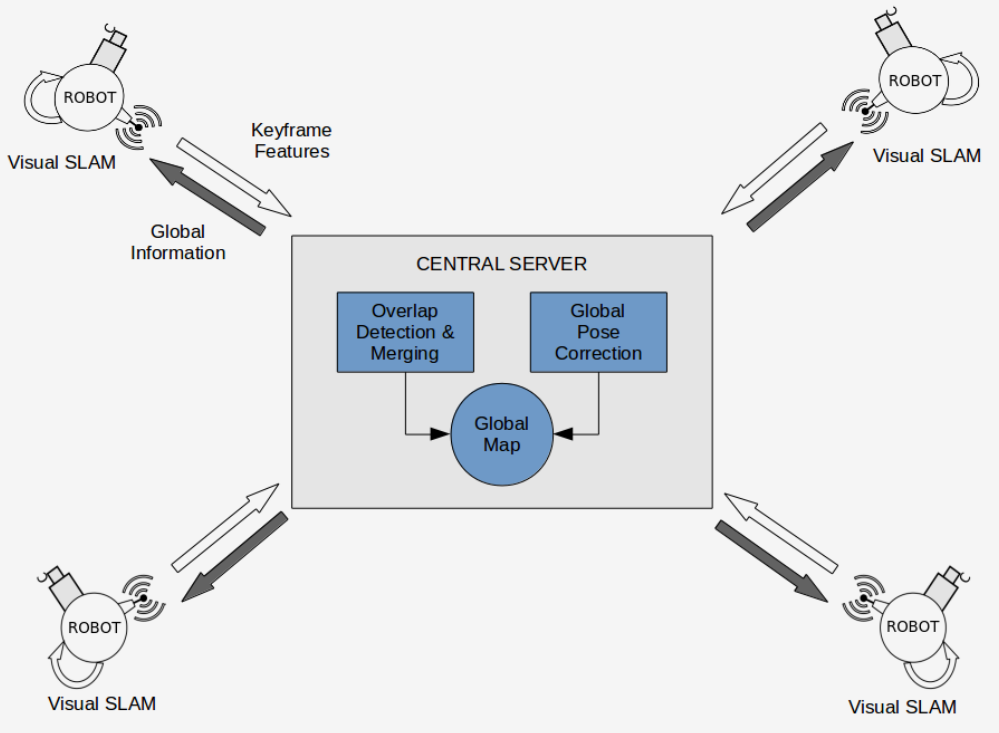 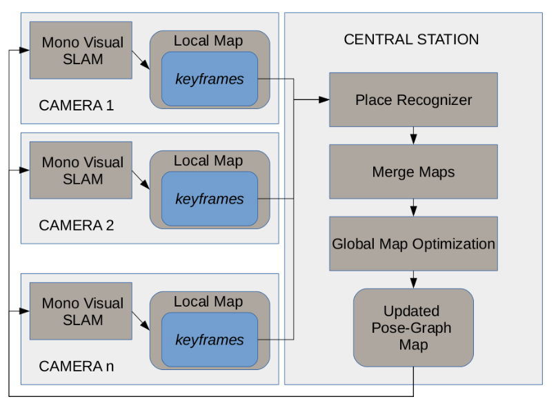 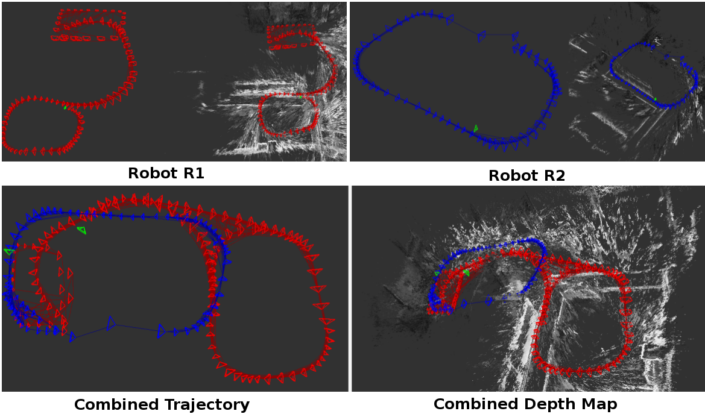